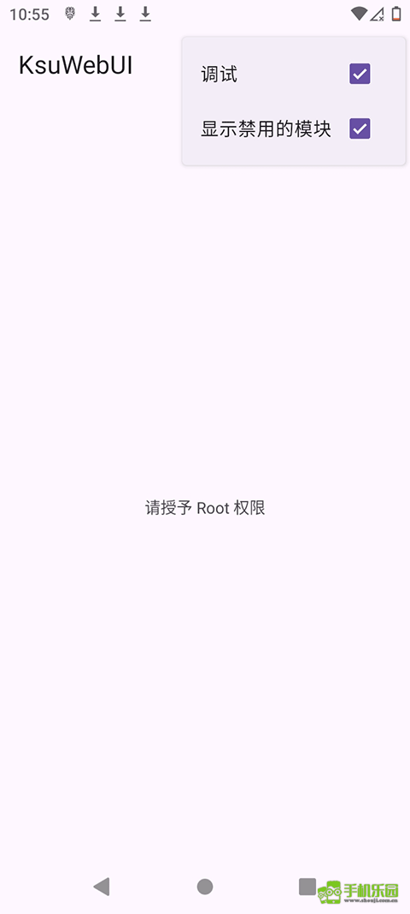

KsuWebUI 从零上手：一次搞定 root 模块管理
刚刷了 KernelSU 还在用终端装模块？这篇教程带你把 KsuWebUI 装起来、走完模块安装、授权检查、卡顿排错的完整流程。
刷完 KernelSU 重启进系统，第一件事打开管理器——然后就傻眼了？模块列表空的、权限请求弹窗不知道点哪个、想装个 ZIP 包找不到入口。别怕，这篇教程结束时你能独立完成 KsuWebUI官网 的初始化配置、安装第一个 root 模块、检查授权应用列表，还能自己排查启动卡顿。
准备：你需要什么
- 已经刷好的 KernelSU 或兼容的 root 框架（Magisk 也能用，但推荐 KernelSU）
- 一台 Android 设备（不限定厂商，从 Pixel 到国内品牌都支持）
- 一份从下载拿到的 KsuWebUI 安装包
- 一个你想装的 ZIP 格式模块包（如果还没有，教程里会提到去哪里找）
确认一下你的 root 框架版本——太老的版本可能不支持 WebUI 功能，建议 KernelSU ≥ v0.5.0。如果你的框架管理器里找不到 KsuWebUI 的入口，大概率是版本太旧，先更新框架再说。

第一步：启动 KsuWebUI 并获取 root
首次打开 KsuWebUI，界面会弹出 root 授权请求。这里别急着点确认——先看清楚请求的 APP 是不是 KsuWebUI 自己（包名通常是 io.github.kyuubiran.ksuwebui），确认无误后选「永久允许」。
如果点了拒绝或者弹窗没了，去 root 框架管理器的授权页面手动找 KsuWebUI 补上权限就行。授权模式一定要选永久允许，选「仅本次」的话下次打开又要弹窗，烦死人。

授权成功后，KsuWebUI 会在本地启动一个 Web 服务并加载界面。这个过程大概 10 到 30 秒，首次启动可能更久，WebView 需要完整初始化——别因为没反应就频繁关闭重开，只会更慢。
第二步：安装你的第一个 ZIP 模块包
有了 root，接下来就是装模块了。ZIP 包是 root 模块的通用格式，KernelSU、Magisk、APatch 都用它。
在 KsuWebUI 左侧栏找到「模块管理」分组，点击进入。页面顶部应该能看到一个「+」按钮或者「安装模块」入口。点它，系统会弹出文件选择器——找到你事先下载好的 ZIP 包，确认模块信息（名称、版本、作者），然后点确认安装。
安装过程在后台进行，通常几秒钟就完事。KsuWebUI 会做这几件事：把 ZIP 包传到 root 框架的临时目录、运行框架的安装脚本、解压文件、注册到模块列表、创建启用标记。安装完一定要重启手机，否则模块不会生效。
重启回来，打开 KsuWebUI 确认新模块出现在列表里。如果模块有自带的设置界面，点详情页应该能打开它的 WebUI。

安装失败的话，对照这几个常见现象排查：
| 提示信息 | 原因 | 解法 |
|---|---|---|
| 不支持的框架 | ZIP 包是给别的框架做的 | 确认模块说明里写了 KernelSU 或通用 |
| 依赖缺失 | 需要先装另一个模块 | 读模块文档，按顺序装依赖 |
| 空间不足 | /data 分区满了 | 清一下系统存储 |
| 签名验证失败 | ZIP 包损坏或被改过 | 重新下载官方源的 ZIP |
第三步：检查你的授权应用列表
模块装好后，root 权限已经发放出去了——但到底谁在拿你的 root？定期看一眼授权列表是安全习惯。
KsuWebUI 侧栏里找「Root 权限」或「授权管理」分组，进去就是已授权 APP 列表。每条记录显示：APP 图标和名称、包名、授权时间、授权模式（永久允许 / 仅本次 / 拒绝）、以及 Last Used——最近一次真正调用 root 的时间。
列表默认按最近使用排序。最上面那个 APP 就是最近一次动过你 root 的。如果看到一个你没印象的 APP 频繁出现在最顶端，或者一个普通的社交/购物 APP 竟然有 root 权限，那就要留意了。
需要警惕的几种情况：
- 一个非工具类的普通 APP 请求过 root
- 不熟悉的 APP 出现在列表里
- APP 很久以前用过一次 root 但你后来卸载了它——授权记录可能还残留着，记得手动撤销
在 KsuWebUI 里撤销授权，底层 root 框架管理器那边会同步生效，两边数据是同一份。
第四步：内核参数调优（可选）
如果你装的是带自定义内核的模块包，KsuWebUI 还提供了内核参数调节的入口。内核参数通过 sysfs 接口以文件形式暴露，KsuWebUI 把它们整理成了可视化的编辑界面。
操作很简单：进入「内核参数」分组，找到你想调的参数（比如 CPU 频率上限、温控阈值、调度器类型），修改数值后点应用。参数会通过 root 权限写入对应的 sysfs 节点，立即生效——但重启后会恢复默认值，需要开机自启的话要写模块的 service.sh 脚本。具体每个参数的含义和推荐调优思路，可以去KsuWebUI文档翻一下。

几个新手容易翻车的地方
翻车点一：启动卡了很久，以为是 APP 崩了
等 30 秒再判断。首次启动要初始化 Web 服务 + 扫描 /data/adb/modules/ 下的所有模块目录，装了几十个模块的话这个扫描本身就慢。如果 60 秒后还是没加载出来，按 Home 键退出，去手机设置里强制停止 KsuWebUI，再重新打开——这次应该能正常。反复卡的话清缓存，别清数据。
翻车点二：装了模块但重启后看不到
大概率是模块包适配问题。有些模块 ZIP 包只给 Magisk 写了 module.prop 而没有 KernelSU 的元信息，KernelSU 虽然能装但不会正常加载。换一份明确标注支持 KernelSU 的 ZIP 包重试。
翻车点三：授权列表里出现陌生 APP
先别急着删。用包名在应用商店搜一下，确认是不是你装过的 APP。真的不是的话，在 KsuWebUI 里点那条记录，选「撤销授权」，然后去 root 框架管理器里确认一下撤销是否同步了。
进阶一句话
基础流程走通之后，你可以继续玩：用 KsuWebUI 的备份功能把模块配置打包存起来（记得开加密，用 AES-256-GCM 保护，别随便分享给别人）、把常用的内核参数写成开机脚本让它们自动生效，或者继续折腾下去看 KsuWebUI 还能做多少事。这套资料维护同时同步在几个开源仓库里——更新最快的是GitHub，国内网络环境下Gitee和GitCode的镜像也能直接访问。KsuWebUI 能做的远不止点几下按钮那么简单。